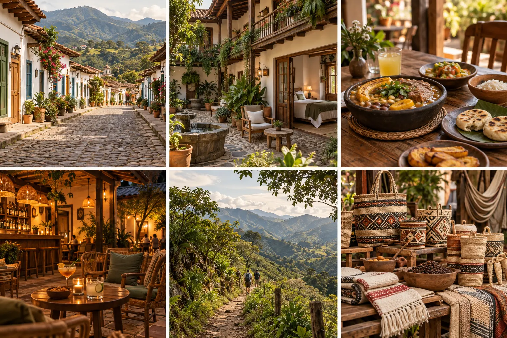
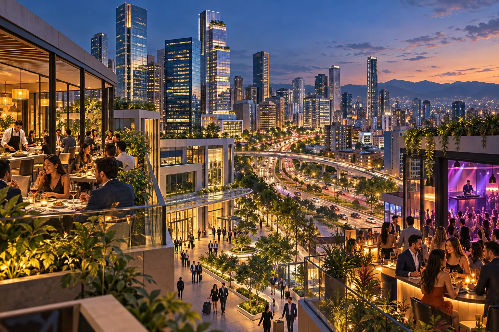
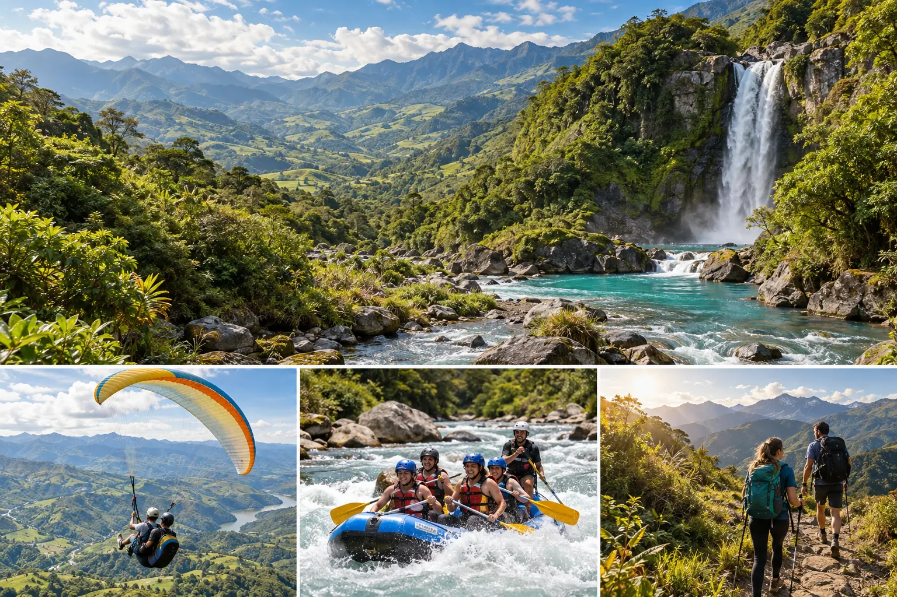

Find what inspires you.
Towns, cities, landscapes and culture: start with the destination and experiences that spark your curiosity.
Destinations with character
Plan a getaway, discover its history and find the best way to experience each destination.



Towns · Cities · Experiences
Find your way to explore / 01
From the destination that inspires you to the places and services you need: explore each offering and combine what suits you, at your own pace.
Your journey starts here / 02
Our first guide is now available. We will open other destinations as their information and images are reviewed.

People make the place / 03
Do you run a business, cultural space or activity in your town or city? Be part of Explorando Lugares.
Local businessesTell us what you do and where you are.
Prepare your information and photographs you have permission to use.
Let us build a local presence with confirmed information.
Leave your details so we can talk about your business.